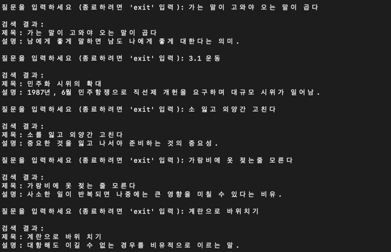
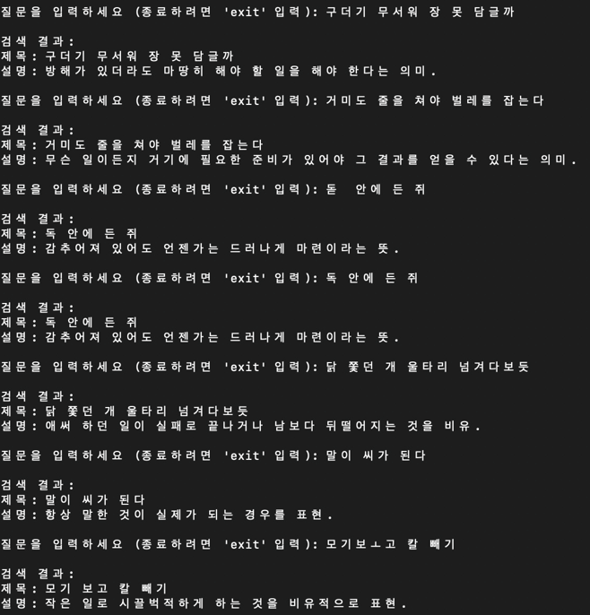
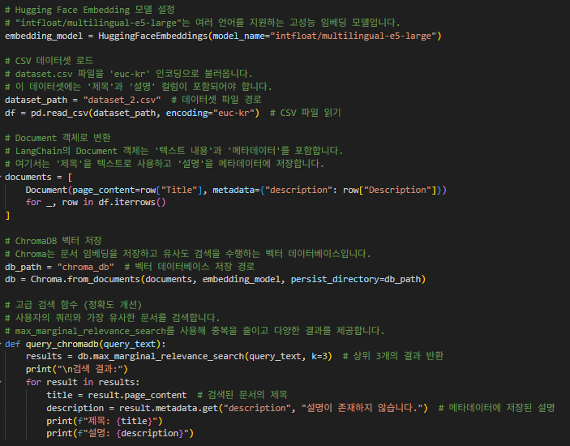
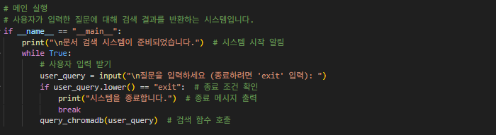

1. 프로젝트 개요
- 프로젝트명: LangChain + ChromaDB 기반 문서 검색 시스템
- 개발 기간: 2024.04 – 2024.06
- 참여 인원: 1명
- 나의 역할: 데이터 수집, 전처리, 벡터 검색 파이프라인 구성, 임베딩 모델 적용 및 평가
2. 기술 스택
- 사용 언어: Python
- 프레임워크: LangChain, ChromaDB
- 데이터베이스: Chroma 벡터DB
- 개발 도구: Jupyter Notebook, HuggingFace, Pandas
3. 주요 기능
- 핵심 기능 소개: 한국어 질문을 입력하면 가장 관련성 높은 설명(문서)을 반환
- 기술적 차별점: max_marginal_relevance_search를 사용해 중복 없는 정확한 검색
- 성능 최적화 내용: multilingual-e5 모델 활용으로 한국어 쿼리 처리 성능 강화
4. 검색 과정
- 데이터 전처리: CSV파일을 불러온 후, 각 행을 LangChain의 Document 객체로 변환
- 임베딩 생성: HuggingFace의 intfloat/multilingual-e5-large 모델을 사용해 텍스트를 벡터로 변환
- 벡터 데이터베이스 구축: ChromaDB에 벡터 데이터를 저장
- 검색 수행: max_marginal_relevance_search를 사용해 입력된 쿼리와 가장 유사한 문서를 반환
5. 문제 해결 사례
- 직면한 문제: 짧은 질문의 의미를 임베딩 모델이 잘 포착하지 못함
- 해결 과정: multilingual-e5-large 모델로 교체하여 정확도 개선
- 결과 및 학습점: 다양한 한국어 문장 구조에 대한 벡터화 경험 및 문서 검색 성능 튜닝 경험 확보
6. 결과 예시
아래는 실제 쿼리 결과입니다.

7. 핵심 코드
